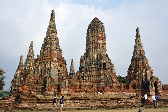

Ayutthaya (อยุธยา) ou Phra Nakhon Si Ayutthaya (พระนครศรีอยุธยา)
 Segunda capital do antigo reino do Sião (a primeira foi Sukhothai), fica às margens do Rio Chao Phraya, há cerca de 80km ao norte de Bangcoc.Seu nome é uma referência à cidade de Ayodhya, na Índia, local de nascimento de Rama na Ramayana (em tailandês, Ramakien), enquanto "phra", do Khmer "preah" (ព្រះ) é um prefixo para um substantivo a respeito de uma pessoa da realeza, "nakhon", do sânscrito "nagar" designa uma cidade importante ou capital e o "sri" ou "si" é um termo honorário tailandês derivado do termo indiano Sri.
A cidade é um oásis de tranquilidade, ideal para momentos de descanso e reflexão, especialmente após alguns dias na frenética e agitada Bangcoc.
Muito mais do que uma impressionante atração turística, é um elo com o passado, um fascinante conjunto de ruínas de uma cidade fundada em 1351 pelo rei U-Thong como capital do antigo Reino do Sião.
O rei estava em retirada de Lop Buri durante um surto de varíola, e proclamou Ayutthaya como a nova capital de seu reino, muitas vezes referido como o Reino Ayutthaya do Sião.
Foi uma das maiores cidades da Ásia durante os séculos XV e XVI, com uma população estimada em 300.000 habitantes no ano 1600, e de até 1 milhão de habitantes em 1700, o que a tornava uma das maiores cidades do mundo na época.
Por séculos sua localização ideal entre a China, a Índia e o arquipélago malaio a tornaram a capital de negócios da Ásia e uma das cidades mais importantes do mundo.
Muitos negociantes passavam por Ayutthaya vindos de diversas partes do mundo, entre eles árabes, chineses, indianos, japoneses, portugueses, holandeses e franceses.
Ayutthaya permaneceu como capital do Reino do Sião por mais de 400 anos, até que em 1767 foi tomada, saqueada e teve seus templos destruídos por invasores da Birmânia (atual Mianmar). Os birmaneses destruíram tudo, de templos e edificações à manuscritos, e a cidade foi incendiada quase que por completo.
Os vestígios mais notáveis da pilhagem podem ser vistos até hoje através de estátuas decapitadas, dos restos de suas cabeças, dos palácios em ruínas, etc.
Esta invasão colapsou o reino, que posteriormente se reergueria após a expulsão dos birmaneses alguns anos mais tarde.
Há essa altura, a capital do reino já havia sido transferida para Bangcoc, e o rei Rama I decidiu manter a capital do reino como estava. Com isso Ayutthaya ficou destruída e definhou como cidade. Mais tarde a Ayutthaya moderna seria fundada novamente, mas há alguns km ao leste de sua localização original
Hoje suas ruínas são a maior atração turística dentre as "day trips" de Bangcoc, e uma das principais do sudeste asiático.
Após ter experimentado alguns dias na capital Bangcoc e os excessos de cores de seus templos, as ruínas de Ayutthaya proporcionam um fabuloso contraste e uma viagem no tempo, tornado possível ver o que havia por baixo do ouro dos templos e palácios: tijolos vermelhos.
O grande valor cultural das ruínas de Ayutthaya foi oficialmente reconhecido em 1991, quando a Cidade Histórica se tornou Patrimônio Cultural da Humanidade da UNESCO.
Como já foi dito, parte da história da cidade se encontra no comércio com outros países, mas esses países não eram permitidos fazer acampamentos dentro dos portões da cidade. Assim, os arredores das margens do rio Chao Phraya possuem vestígios dos países que mandaram comerciantes para a cidade.
A cidade tem cerca de 53.000 habitantes (estimativa de 2014).
Como chegar saindo de Bangcoc
De trem: para mim, a melhor opção. Mais de 30 linhas saem diariamente da estação Hua Lamphong em Bangcoc, das 4:20 às 22:25. A viagem leva de 1h30min à 2h e a passagem varia de ฿$ 15 à ฿$ 380, variando conforme serviço e tipo de vagão.De ônibus: ônibus saem a cada 20 minutos do Northern Bus Terminal (Moh Chit 2), das 8:00 às 18:00. Ônibus de 1ª classe custam cerca de ฿$ 80, e a viagem leva de 1h15min à 2 horas, dependendo do trânsito.
Minivans: na estação Victory Monument do BTS Skytrain você pode pegar uma van para Ayutthaya. Custam cerca de ฿$ 80 e saem a cada 20-25 minutos.
Com excursão: você pode fazer uma excursão de ônibus a partir de Bangcoc, voltando de cruzeiro pelo Rio Chao Phraya. Ou uma excursão de ida e volta de minivan, que custa uns ฿$ 1.000. Estas tours podem ser facilmente agendadas em alguma agência de turismo (na Khao San Road há várias).
De táxi: um táxi desde o aeroporto de Bangcoc deve custar em torno de ฿$ 1.800, mas é bom confirmar antes com o taxista.
De carro: há diversas rotas: 1) Pegue a Rodovia 1 (Phahon Yothin) via PratuNam Phra In e vire entrando na Rodovia 32, aí vire para a Rodovia 309 para Ayutthaya.
2) Pegue a Rodovia 304 (Chaeng Watthana) ou a Rodovia 302 (Ngam Wong Wan), vire à direita para a Rodovia 306 (Tiwanon), cruze a ponte Nonthaburi ou a Nuanchawi para Pathum Thani, continue na Rodovia 3111 (Pathum Thani-Sam Khok-Sena) e vire à direita em Amphoe Sena para a Rodovia 3263 para Ayutthaya.
3) Pegue a Rodovia 306 (Bangkok-Nonthaburi-Pathum Thani), na Pathum Thani Bridge Intersection vire para a Rodovia 347 e Rodovia 3309 via Bang Sai Royal Folk Arts and Crafts Centre, Amphoe Bang Pa-in, para Ayutthaya.
4) Pegue a via expressa 9 (Si Rat Expressway) via Nonthaburi-Pathum Thani e desça para a Rodovia 1 via Bang Sai Royal Folk Arts and Crafts Centre, vire à esquerda na Rodovia 3469 em direção à Bang Pahan e à direita na Worachet Intersection para Ayutthaya.
Fui para Ayutthaya umas 4 ou 5 vezes, na primeira, como eu não tinha pesquisado muito, fui com uma tour de uma agência de turismo da Khao San
Road. É a opção mais prática, pois você é levado para as principais atrações e já tem o almoço e os ingressos inclusos. Mas sai bem mais caro do que fazer
tudo no bom e velho estilo "do it yourself" (faça você mesmo), adotado por todo mochileiro que se preze.
Como esse guia é voltado mais para mochileiros, e economizar é sempre bem vindo, aconselharia a pegar o trem e se aventurar pela cidade por conta própria, mas
claro, baixe os mapas no Google Maps e salve os pontos de interesse antecipadamente, caso não
tenha plano de dados. Caso não se sinta preparado para sair desbravando uma cidade desconhecida por conta própria, você pode pegar
songthaews (pick-ups adaptadas para receber passageiros) até seus locais de interesse.
Dependendo do seu preparo físico e da temperatura (que costuma ser alta o ano todo na cidade), boa parte das atrações principais pode ser alcançada a pé.
Se locomovendo pela cidade
Se você for de trem, logo ao sair da estação será abordado por motoristas de "songthaew" oferecendo uma tour pela cidade.Fica a seu critério. Mas combine o preço antecipadamente.
Outra ótima opção é alugar uma bicicleta. Há alguns estabelecimentos que prestam esse serviço. Você vai precisar deixar uma quantia como depósito, que será devolvida quando você devolver a bicicleta.
É uma excelente opção, pois você economiza tempo, se desgasta muito menos (e isso é muito importante em uma cidade tão quente como Ayutthaya), além de economizar dinheiro.
Fique seguro
Ayutthaya, como a maior parte da Tailândia, é bem segura para turistas, e crimes violentos como assaltos são raros. A principal preocupação aqui deve ser com os cães de rua. Ainda que não sejam uma ameaça frequente, pode acontecer de você cruzar com algum cão que tente atacá-lo.Como em boa parte do país, há muitos cães de rua, alguns famintos e em más condições de saúde, e eles podem ser um problema principalmente na baixa temporada, quando não há tanta gente nas ruas.
Embora a grande maioria seja dócil e inofensiva, para evitar ser seguido por um bando de cães, é melhor não andar sozinho, especialmente à noite, e o mais importante: desvie seu olhar deles, nunca olhe em seus olhos, pois isso os deixa em alerta e prontos para o ataque.
Sempre tive problemas com cachorros na Ásia. Parece que os cães de lá são xenofóbicos, haha. Quando os nativos passavam, eles nem davam bola, quando eu passava, latiam e ameaçavam atacar.
Mas isso é porque eu fico desconfiado deles, pois depois do primeiro ataque, é normal que você fique desconfiado.
Percebendo uma insegurança ou algum medo da pessoa eles se sentem mais seguros para atacar.
Depois que percebi que se você passar por eles sem olhar e ignorar os latidos iniciais eles não atacam, comecei a fazer isso com frequência e não fui mais atacado. Funciona muito bem, mas ainda assim não é uma regra infalível, então cuidado!
Ayutthaya na cultura Pop
* Um cenário baseado na Tailândia e chamado "Ayothaya" aparece no MMORPG Ragnarok Online, para PC.* A cidade é um dos cenários do jogo de luta Soul Calibur II (PlayStation 3, Xbox 360, PlayStation 2, GameCube, Arcade, Xbox).
* Os templos no Wat Phra Si Sanphet e no Wat Ratchaburana aparecem nos jogos Street Fighter II, Kickboxer (com o nome de "Stone City"), Mortal Kombat, Mortal Kombat Annihilation e Mortal Kombat Conquest.
* O Buda deitado de Ayutthaya aparece em vários cenários do Sagat nos jogos do Street Fighter.
* Aparece no filme The King Maker, de 2005, e no primeiro filme do Mortal Kombat, além do clássico Kickboxer, com Jean Claude Van Damme.
* A destruição da quadra japonesa em 1630 sob ordem de Prasat Thong e suas consequências é central para uma das histórias nas antologias da série de 1632 de Ring of Fire III - All God's Children in the Burning East.
* No jogo para Nintendo DS, Golden Sun: Dark Dawn, de 2010, os personagens principais visitam a cidade de "Ayuthay", que se baseia bastante na cultura e arquitetura tailandesa.
* Um mapa baseado na Tailândia, chamado Ayutthaya, aparece no jogo Overwatch (disponível para PC, Nintendow Switch, Xbox One e PS4).
As atrações de Ayutthaya
Era considerado o templo mais sagrado no complexo do antigo palácio real e o mais belo da cidade, até ser completamente destruído pelos birmaneses em 1767.
Serviu como modelo para a construção do complexo do Wat Phra Kaew em Bangcoc, hoje a principal atração turística do país.
Em 1350, o rei U-Thong, também conhecido como Ramathibodi I, ordenou a construção de um palácio real na mesma área que hoje abriga o Wat Phra Si Sanphet. A construção do palácio foi concluída em 1351 e o rei então estabeleceu Ayutthaya como capital de seu reino.
Em 1448 o rei Borommatrailokanat construiu um novo palácio ao norte e converteu o antigo palácio em um local sagrado. Em 1492 sob ordens de seu filho, o rei Ramathibodi II, foram construídos 2 chedis onde as cinzas de seu pai, o rei Borommatrailokkanat, e seu irmão, o rei Borommaracha III, foram enterradas.
Em 1499 um viharn (salão de adoração), chamado "Vihara Luang" (capela real) foi construído na área do palácio. O rei Ramathibodi II deu ordens para que uma imagem gigante de Buda fosse construída e instalada no Wat Si Sanphet. Esta imagem, chamada Phra Si Sanphetdayan, levou 3 anos para ser construída, tinha 16 metros de altura, seu interior foi feito de bronze e pesava aproximadamente 64 toneladas, sua superfície foi coberta com 343 kg de ouro e ela ficava sobre um pedestal de 8 metros de extensão. Esta imagem foi derretida pelos invasores birmaneses do Século XVIII.
Em 1529 foi construído o terceiro chedi, sob ordens do rei Borommaracha IV.
Nos anos 1740, sob o reinado de Borommakot, o templo foi renovado, mas 27 anos mais tarde viria a ser destruído durante a invasão birmanesa.
O antigo palácio real pode ser acessado através da mesma entrada, mas possui apenas algumas construções de pé.
O templo foi totalmente saqueado e destruído durante a invasão dos birmaneses.
Algumas partes destruídas parecem desafiar a gravidade, e a fileira de estátuas de Budas decapitados é uma imagem marcante.
É neste templo que encontra-se a famosa cabeça de Buda presa às raízes de uma árvore, muito provavelmente o local mais fotografado do complexo do templo, e cuja foto está presente em destaque em praticamente todos os guias e mapas da cidade.
Ao tirar fotos desta cabeça, certifique-se de sentar-se mantendo seus joelhos na altura do solo, já que essa cabeça é considerada sagrada pelos tailandeses. Fazendo isso você demonstra respeito pela cultura local e não ofende a crença alheia.
Entrada: ฿$ 50 Voltar à lista
Foi um templo real onde reis e seus sucessores participavam de cerimônias religiosas. Príncipes e princesas foram cremados no local, incluindo Chaofa Thammathibet (เจ้าฟ้าธรรมธิเบศร), filho do rei Boromakot.
É praticamente "obrigatório" em uma visita à cidade.
Foi projetado em estilo Khmer para ganhar méritos budistas como um memorial para sua mãe, entretanto o príncipe Damrong acreditava que ele foi construído para celebrar a vitória do reino de Ayutthaya sobre Longvek, hoje parte do atual Camboja.
Possui um "prang central em estilo khmer (em tailandês, พระปรางด์ประธาน) com 35m de altura e 4 prangs menores e 8 capelas em forma de chedi (em tailandês, เมรุทิศ เมรุราย, ou Meru Thit Meru Rai), que são ligadas por uma passagem retangular em forma de cruz (Phra Rabieng). Esta passagem tinha várias entradas laterais e era coberta, mas atualmente apenas as fundações dos pilares e do muro externo continuam de pé.
Você pode subir no chedi central através de escadas, e do alto ter uma boa vista da área ao redor.
Ao longo do muro há 120 estátuas de Buda sentados, na época provavelmente pintadas em preto e dourado.
As 8 capelas em forma de chedi são formadas de uma maneira única. Elas tinham pinturas nas paredes internas, as externas eram decoradas com 12 relevos representando cenas da vida de Buda (Jataka) que devem ser "lidas" no sentido horário. Infelizmente apenas fragmentos das pinturas e dos relevos sobreviveram.
Em cada um dos chedis retangulares haviam 2 estátuas de Buda sentados, também pintadas de preto e em ouro.
Do lado de fora das passagens ao leste, próximo do rio ficava o salão de ordenação do templo (phra ubusot).
Ao norte e ao sul do ubusot ficavam 2 chedis com 12 cantos "indentados" (em tailandês, เจดีย์อมุมสิบสอง), nos quais foram depositados as cinzas da mãe do rei.
Após a destruição da cidade pelos birmaneses em 1767, o templo ficou deserto. Roubos, venda dos tijolos das ruínas e decapitações das estátuas de Buda eram comuns.
Foi só em 1987 que o Departamento Tailandês de Belas Artes começou a restaurar o templo, abrindo-o para visitação pública em 1992.
Horário: diariamente das 8:30 às 17:00
Entrada: ฿$ 50 Voltar à lista
Seu nome original era Nong Sano, posteriormente alterado para Bueng Phraram.
Atualmente seu nome oficial é Parque Público Phra Ram, embora seja mais referido como Wat Phra Ram (Templo Phra Ram).
Há uma grande lagoa em frente ao monastério, e embora as construções estejam em ruínas, o topo do prang ainda está inteiro. Escadas ao lado dele dão ótimas vistas da cidade.
O templo foi construído fora do complexo do palácio real pois o local foi escolhido pelo rei Ramesuan, que queria que ele fosse erguido no mesmo local onde ocorreu a cerimônia de cremação real de seu pai, o rei U-Thong.
Quando os birmaneses conquistaram Ayutthaya, em 1569, eles adicionaram 3 níveis na base do chedi em estilo Mon, um grupo étnico tailandês.
Mais tarde o rei Boromakot reconstruiu o chedi no estilo Ayutthaya, o qual permanece até hoje.
Você pode subir no topo para ter uma vista panorâmica dos arredores da cidade, embora a fiação dos postes e a área moderna encubram parte da área histórica da cidade.
Entrada: gratuita. Voltar à lista
O chedi mede 62,1m de altura, e foram utilizadas 28,14 toneladas de tijolos em sua construção.
Horário: diariamente das 8:00 às 18:00.
Entrada: ฿$ 20. Voltar à lista
Em 1958 foi encontrada uma grande quantidade de estátuas douradas e outras parafernálias budistas, embora boa parte tenha sido roubada mais tarde.
O que sobrou está agora no Museu Nacional Chao Sam Phraya.
Você pode subir por dentro do prang para ter boas vistas da área ao redor.
Uma misteriosa escada abaixo leva à 2 salas não restauradas, com as pinturas originais ainda visíveis nas paredes.
Durante a 2ª queda de Ayutthaya, a imagem e a construção foram destruídas pelo fogo. A construção atual foi restaurada mas não possui detalhes tão belos quanto os originais.
A área aberta à leste do santuário (wihan) era antigamente o Sanam Luang, onde as cerimônias de cremações reais aconteciam.
Entrada: gratuita. Voltar à lista
Como é mais destinado aos locais, não tem tantas quinquilharias turísticas, no entanto a comida é fantástica e você pode encontrar roupas boas e baratas.
Vale a pena também por ser um exemplo mais tradicional de mercado tailandês.
Há várias barraquinhas noturnas e vendedores de rua com uma boa variedade de comida, além de algumas barracas com eletrônicos, calçados e outras coisas.
O plano da sua localização foi definido para estar na direção norte-sul, de acordo com rotas de comunicações antigas.
Ao contrário dos outros templos, o rei mandou cobrir todas as construções com telhas amarelas de vidro, e o templo ficou conhecido como Wat Krabueang Khlueap, ou Templo das Telhas de Vidro.
Sua construção levou 2 anos e o templo passou por uma grande renovação no reinado de Borommakot, que teve 3 pares de portas decoradas com belos arranjos em madrepérola. Os 3 pares foram levados para Bangcoc. Um deles está dentro do Templo do Buda de Esmeralda, outro está no Wat Benchamabophit (Templo de Mármore), e outro no Museu Nacional de Bangcoc.
Contém alguns pequenos chedis (pináculos) e algumas construções modernas com belíssimos murais.
Horário: das 8:30 às 17:30. Voltar à lista
Ninguém sabe ao certo o quão velho ele é, mas com certeza ele já existia antes da cidade ser fundada como capital, ou seja, é anterior à 1351.
Contém a mais antiga imagem de Buda de bronze da cidade, chamada Phrachao Phananchoeng, construída em 1325.
Uma pequena sala à direita do salão principal contém uma boa coleção de imagens e é decorada com várias pinturas em cores vivas e banhadas à ouro.
Horário: diariamente das 8:30 às 17:00.
Entrada: ฿$ 20, se entrar pelo lado do rio. Voltar à lista
Homenageia a primeira heroína na história siamesa, uma antiga rainha.
Foi restaurado em 1990, e durante as obras alguns objetos antigos foram encontrados, como uma imagem de Buda feita com uma pedra branca, uma réplica de chedi e um relicário dourado. Esses objetos foram levados ao Museu Nacional Chao Sam Phraya.
Já estava construído antes da estabilização de Ayutthaya.
O wihan Luang já abrigou uma enorme cabeça de Buda do período U Thong feita em bronze, que agora é exibida no Museu Nacional Chao Sam Phraya.
No templo há uma réplica dessa cabeça, além de um Buda deitado com 12m de largura, chamado Wihan Phra Phutthasaiyat, construído sob ordens da rainha cônjuge como agradecimento pela cura de sua filha doente.
Entrada: gratuita. Voltar à lista
É bom visitá-lo antes de se dirigir à qualquer outro lugar, pois ele organiza as ruínas em uma perspectiva histórica, aí você vai visitar os lugares já sabendo da história por trás deles.
Boa parte das exibições é dedicada à relação do antigo Reino do Sião com outros povos, mas a vida nos vilarejos, a arte e a cultura local também são abordadas.
Entrada: ฿$ 100 (adultos), ฿$ 50 (crianças). Voltar à lista
Originalmente construída em madeira em 1350 pelo rei Mahachakraphat, mais tarde foi reconstruída com tijolos.
Atualmente umas poucas paredes e portões permanecem de pé.
É um templo único, destacado por ser o único à sobreviver à destruição da cidade durante a invasão birmanesa do Século XVIII.
Destaque também para os tetos arcados e um Buda feito de pedra preta.
A maioria das valiosas estátuas de ouro em exibição foi encontrada no Wat Ratchaburana e no Wat Phra Mahathat.
Entrada: ฿$ 100.
Horário: de Quarta à Domingo das 9:00 às 16:00.
☎: 035251586 ou 035252795. Voltar à lista